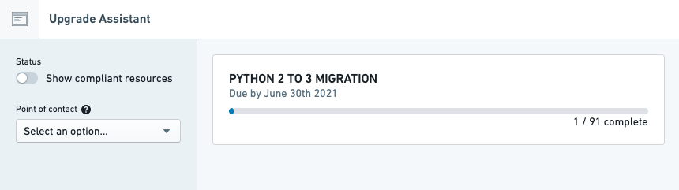

Platform changes occur when a platform component, such as a backend service or a frontend application, is upgraded or has its configuration changed. Upgrade Assistant tracks platform changes and provides a list of resources that are affected or may be affected by upcoming changes.
Example platform changes include:
These platform changes may require extra attention because:
Each platform change announced in Upgrade Assistant has a due date, which is the scheduled date that the change will go into effect. As the due date gets closer, Upgrade Assistant will send reminders to users who are assigned resources.

:::callout{theme="neutral"} Due to deployment constraints and scheduling, a change may be applied after its due date. However, the due date should still be considered the definitive time by which preparations for a change should be completed. :::